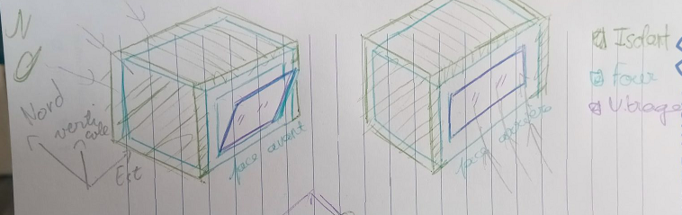
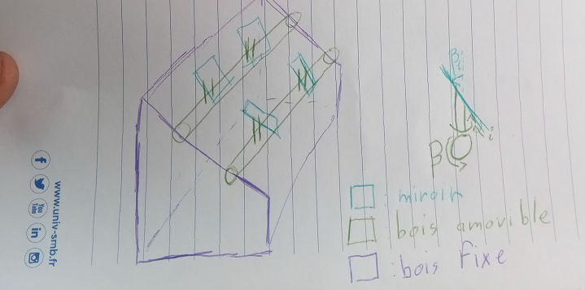

Four solaire puissant & maison¶
sans implémentation automatique du tracking, il est nécessaire de faire le tracking soi-même. Par conséquent, il faut connaître les angles auxquels il faut incliner les miroirs. Dans le schéma proposé, il est possible de bouger une barre en bois (d’un angle \(\beta\) positif vers l’arrière) et chaque miroir \(M_i\) d’un angle \(\alpha_i\). Comment calculer ces angles? Nous présentons ici certains calculs sensés optimiser cela, si bien faits cela s’entend. Dans un autre notebook, nous proposerons un calcul rapide de ces angles, afin de pouvoir optimiser sur le terrain. A cette fin, il est possible de faire tourner des notebooks Jupyter sur son téléphone, voir ici. Lien en anglais.
/!\ /!\ : on parle ici d’une puissance élevé, cela nécessite donc de faire attention. Il est recommandé de:
Ne pas passer devant les rayons, au niveau du point focal -> besoin d’une entrée par l’arrière.
Installer un occulteur sur les côtés et le dessus du four, afin que des rayons mal convergés n’aillent pas dans les yeux ou sur le corps des personnes manipulant le four.
Orienter les miroirs vers le bas lorsque non utilisé.
Vérifier le dégazage des matériaux de construction: des gazs peuvent être émis lors de la chauffe de matériau, il est nécessaire de se renseigner avant de les utiliser; par exemple, de la peinture dans le four semble une mauvaise idée!
Méthodologie design du four¶
Les questions à se poser pour le four sont:
Son inertie thermique
Ses pertes thermiques
En jouant sur ces deux paramètres, il est possible de calculer la puissance solaire en entrée nécessaire, vis à vis du temps de chauffe, et ensuite le besoin pour le garder à la bonne température. Cela se base sur deux estimations, dont nous détaillons les calculs ci-dessous. Plusieurs questions que l’on peut se poser: Combien de temps mon four prendra-t-il à chauffer? Combien de temps restera-t-il chaud quand il n’y aura plus de soleil? Quels matériaux utiliser, quels sont leurs intérêts respectifs?
L’équation de base que l’on peut écrire, sous forme différentielle, est: \(m*C_p*\frac{dT}{dt}=P_{in}-q_{pertes}(T)\), avec \(m*C_p\) le terme d’inertie thermique détaillé dans la section ci-dessous, \(T\) la temmpérature du four, \(P_{in}\) est la puissance en entrée (venant des miroirs), \(q_{pertes}\) correspond aux pertes thermiques du four.
Une bonne approximation de cette équation est: \(m*C_p*\frac{\Delta T}{\Delta t} = P_{in}-q_{losses}(T)\), avec \(\Delta T\) la différence de température entre deux instants, chacun éloigné de \(\Delta t\).
Il est à noter que cette équation marche pour tous les fours - on peut relier cela au préchauffage des fours traditionnels, ainsi que leur puissance et leur temps de chauffe, pour se faire une idée. Un four à pain traditionnel peut prendre jusqu’à trois jours pour chauffer! Une automatisation du tracking permettrait d’avoir accès à un four communale tournant la grande majorité du temps à l’énergie solaire, peut-être un jour?
Inertie thermique¶
Le terme d’inertie thermique correspond à \(m*C_p\). m est la masse du four et \(C_p\) la capacité calorifique du matériau utilisé. Cette dernière correspond à l’énergie nécessaire (en joules) pour faire monter de 1°C un kilogramme de matériau. Quelques données, pour l’exemple: l’eau présente un \(C_p=4187 J/kg.°C\), la terre présente un \(C_p\) d’environ \(1000 J/kg.°C\), les roches montrent de grandes variations selon leur origine, mais leur \(C_p\) est en général entre 800 et 2400 J/kg.°C.
Pour calculer l’inertie thermique, il faut donc calculer les différentes masses et trouver sur internet leurs différentes capacités thermiques, puis sommer pour chaque matériau le produit des masses par leur \(C_p\).
Exemple: On prend un four, cubique, de côté 55cm, fait en terre avec une épaisseur de 5cm de terre. On commence par calculer le volume de terre: on prend donc le volume d’un cube de 55cm de côté, moins le volume d’un cube de 50cm (l’air au milieu). Cela donne: \(V_{terre} = 0.55^3-0.5^3 = 0.041 m^3 = 41 L\). La masse de terre est alors: \(m_{Terre} = \rho_{Terre}*V_{terre} = 1500 * 0.041 = 62 kg\). La masse volumique de la terre et sa capacité spécifique viennent d’ici.
Sa chaleur spécifique est de \(C_p=900 J/kg.°C\). Son inertie thermique s’évaluera alors comme: \(I_t = m_{Terre}*C_p = 62*900 = 56 kJ/°C\)
cCube = 0.55 #en m
eTerre=0.05 #en m
VTerre=cCube**3-(cCube-eTerre)**3 #en m^3
print("Volume de terre: ", VTerre*1000," L")
rhoTerre=1500 #en kg/m3
mTerre= rhoTerre*VTerre
print("Masse de terre: ", mTerre, " kg")
CpTerre = 900
ItFour = mTerre*CpTerre
print("Inertie du four: ", ItFour, " J/°C")
Volume de terre: 41.37500000000005 L
Masse de terre: 62.06250000000008 kg
Inertie du four: 55856.25000000007 J/°C
Il faut donc amener 56kJ d’énergie pour faire monter de 1° le four.
Pertes thermiques¶
Ces pertes thermiques s’écrivent en général \(U*A*(T_{four}-T_{ext})\). A est l’aire extérieure, facile à déterminer, et \(\Delta T = T_{four}-T_{ext}\) la différence de température entre l’intérieur du four et l’extérieur. U est le coefficient de pertes thermiques, en W/m².°C, plus difficile à déterminer: pour cela, il faut faire un calcul de résistance thermique, ce qui est fait classiquement via la relation: \(U = \frac{1}{R_{eq}} = \frac{1}{\sum_i R_i}\).
Pour calculer les résistances thermiques, il faut connaître les conductivités \(\lambda_i\) des différentes couches de matériaux. Ensuite, chaque résistance s’écrira comme \(\frac{e_i}{\lambda_i}\) avec \(e_i\) l’épaisseur du matériau. Il faut également ajouter comme résistance thermique le coefficient de convection entre la paroi extérieur et l’air, noté \(h_{ext}\). Ce dernier est en général égal à 10W/m².°C.
On obtient alors: \(U= \frac{1}{ \frac{1}{h_{ext}}+\sum_i \frac{e_i}{\lambda_i}}\)
On peut alors calculer le temps de descente de la température si il n’y a pas de source de chaleur, ce qui équivaut à \(P_{in}=0\): le temps caractéristique s’écrit \(\tau = \frac{I_t}{UA}\), et la résolution de l’équation différentielle ci-dessus donne: \(T=T_{ext}+(T_0-T_{ext})*\exp(-\frac{t}{\tau})\). Une estimation rapide de l’exponentielle nous permet de se dire que durant \(\tau\), la différence de température sera divisé par 3.
Exemple: Pour le four en terre défini ci-dessus, avec une conductivité de la terre valant \(\lambda_{terre} = 0.7W/m.°C\), on obtient: \(U = \frac{1}{\frac{1}{10}+\frac{0.05}{0.7}} = 5.8W/m².°C\) L’aire extérieure du four se calcule avec \(A=6*c² = 1.8 m² \). On voit alors, que pour une différence de température de 150°C, il y aura une perte de \(q_{pertes} = 1588W\). Pour garder ce four à cette température, il faudra donc apporter 1.5 kW d’énergie thermique. Si on ne lui apporte plus de chaleur, il redescendra à une différence de température de 50°C au bout de : \(\tau = 1.5h\)
Si l’on ajoute une couche de paille de 5cm isolant, on obtient alors de bien meilleurs résultats: en effet, la conductivité de la paille est de 0.052 W/m.°C, ce qui donne un temps caractéristique \(\tau = 9.7h\).
lambdaTerre = 0.7
ePaille=0.05
lambdaPaille=0.052
UFour = 1/(1/10+eTerre/lambdaTerre+ePaille/lambdaPaille)
print("Coefficient de pertes thermiques U: ",UFour, " W/m².°C")
AFour = 6*cCube**2
print("Aire extérieure du four A: ", AFour, "m²")
UA=UFour*AFour
print("Pertes thermiques du four: ", UA, "W/°C")
deltaT=150
print("Pertes à 150°C: ", UA*deltaT, "W")
tau=ItFour/(UA)/3600
print("Temps caractéristique: ",tau, "h")
Coefficient de pertes thermiques U: 0.8826382153249271 W/m².°C
Aire extérieure du four A: 1.8150000000000004 m²
Pertes thermiques du four: 1.6019883608147432 W/°C
Pertes à 150°C: 240.29825412221146 W
Temps caractéristique: 9.6852295431841 h
Estimation plus précise¶

Il faut calculer pour chacun des côtés du four. A l’instant, le design envisagé est de mettre un four (cassé) avec le dos au soleil: il sera chauffé par la face arrière, le côté vitre classique conservera son rôle d’ouverture. Les trois autres côtés seront mis en masse (terre) et erenforcé en isolant. La face arrière sera elle dénudé, permettant une absorption de la chaleur solaire, et une diffuséion dans le four et la masse thermique. Une vitre sera déposé devant afin de servir d’isolant à la face arrière, fixé par le mélange de terre et paille utilisé comme masse et isolant.
Calcul des résistances thermiques des trois types de côtés:
Face avant du four: pris ici. Sa résistance thermique est de \(R_{eq}=0.39 m².°C/W\), et donc de \(U_{avant} = 2.5 W/m².°C\).
Face arrière du four: 1 épaisseur de verre - \(\lambda_V = 1 W/M.°C\),\(e_V=4mm\) -, 3 interconnections avec l’air: métal-air,air-verre,verre-air, avec \(h=10 W/m².°C\). D’où une résistance thermique de : \(R_{eq} = 3*\frac{1}{h}+\frac{e_V}{\lambda_V} = 0.34 K.m²/W\) et \(U_{arrière} = \frac{1}{R_{eq}} = 2.94 W/m².°C\).
3 faces sur le côté enrobé dans de la terre, paille - pertes par radiation déjà isolée probablement. On suppose que la première isolation est de 0.1W/m².°C (souvent pas ouf). On part sur une épaisseur de terre de 5 cm et de 3cm de paille, ce qui donne:\(R_{eq} = \frac{e_{terre}}{\lambda_{terre}}+\frac{e_{paille}}{\lambda_{paille}}=0.64°C.m²/WC\) et donc \(U_{cotes} = 1.54 W/m².°C\)
U_avant=2.5
U_arriere=1/(3*1/10+0.04/1.)
U_cotes= 1/(0.05/lambdaTerre+0.03/lambdaPaille+0.1)
Calcul des différentes aires: Dimension du four -> 45x27x38. Avec l’isolant: 65cmx48cmx27cm
Face avant: \(A_{avant} = 0.65*0.48=0.312m²\)
Face arrière: \(A_{arrière} = A_{avant}\)
Les côtés: \(A_{cotes} = 2*0.48*0.27+ 2*0.65*0.27=0.61 m²\) - on suppose que le sol est isolé de la même manière que les côtés.
L=0.65 #longueur rectangle de la porte
l=0.48 #largeur rectangle de la porte
p=0.27 #profondeur du four
A_avant=L*l
A_arriere = L*l
A_cotes=2*l*p+2*L*p
print("Aire avant & arrière: ",A_avant,"m² \n","Aire des côtés: ", A_cotes,"m²")
Aire avant & arrière: 0.312 m²
Aire des côtés: 0.6102000000000001 m²
Calcul du coefficient UA du four: \(UA= U_{avant}*A_{avant}+U_{arriere}*A_{arriere}+U_{cotes}*A_{cotes} = 1.9 W/°C \)
UA=U_avant*A_avant+U_arriere*A_arriere+U_cotes*A_cotes
print("UA = ",UA," W/m².°C")
UA = 2.513039129308111 W/m².°C
Estimation de la puissance d’entrée¶
La puissance d’entrée \(P_{in}\) doit être déterminée afin de savoir le nombre de miroirs nécessaires. On le fait à partir des données précédentes et des choix faits, en termes d’inertie thermique, et donc d’épaisseur et de la nature des matériaux, et également en température visée et temps de chauffe. Ce dernier dépend également du soleil arrivant sur le four!
mTerre=rhoTerre*(2*l*p*0.05+2*L*p*0.05)
It=mTerre*CpTerre
print("Masse de terre:", mTerre,"\n","Inertie thermique:",It,"J/°C")
tau=It/UA/3600
print("Temps caractéristique: ",tau," h")
Masse de terre: 45.765
Inertie thermique: 41188.5 J/°C
Temps caractéristique: 4.552754418571271 h
A l’arrache, on peut prendre pour les pertes thermiques durant le taux de chauffe entre la différence de température au début et à la fin. On trouve alors \(P_{in} = q_{pertes}+I_t * \frac{\Delta T}{\Delta t}\)
from math import sqrt
T_four= 200
T_ext=20
qPertes=UA*(T_four-T_ext)/2
print("Les pertes thermiques moyennes sur la chauffe sont de: ", qPertes," W")
delta_t_Chauff = 3*3600 #temps de chauffe du four en secondes à T_four
qChauff=It*(T_four-T_ext)/delta_t_Chauff+qPertes
print("Temps de chauffe: ",delta_t_Chauff/3600," h\n","Puissance de chauffe moyenne: ", qChauff," W")
P_helios = 600 #W/m²: puissance moyenne arrivant des héliostats
aire_heliostats = qChauff/P_helios #nombre d'héliostats
aire_1Helios = L*l
cote_1Helios=sqrt(aire_1Helios)
nb_heliostats= aire_heliostats/(L*l)
print("Energie des héliostats estimée: ",P_helios," W/m² \n","Aire d'héliostats : ",
aire_heliostats," m²\n","Nombre d'héliostats: ",nb_heliostats, "avec une aire de ",aire_1Helios," m²",
", ce qui donne un carré de ",cote_1Helios, " m de côté.")
Les pertes thermiques moyennes sur la chauffe sont de: 226.17352163772998 W
Temps de chauffe: 3.0 h
Puissance de chauffe moyenne: 912.64852163773 W
Energie des héliostats estimée: 600 W/m²
Aire d'héliostats : 1.5210808693962168 m²
Nombre d'héliostats: 4.875259196782746 avec une aire de 0.312 m² , ce qui donne un carré de 0.5585696017507576 m de côté.
N_helios = 10 # Nombre d'héliostats dans la suite du code
10 héliostats de 0.3 m² semblent adapté à la situation calculé ci-dessus. Mesurer la taille de l’image pour savoir!!!!
Méthodologie mathématique¶
Design des miroirs¶
Nous allons calculer la relation entre la longueur de la corde nécessaire pour connecter les deux bords. A voir distinction entre

Position optimal à design donné¶
Nous nous basons dans un repère \((O,Ox,Oy,Oz)\). Le vecteur solaire \(\vec{s}\) est tel que décrit dans le chapitre Emplacement du soleil, calculable via l’algorithme PSA.
Nous allons distinguer deux cas: soit la machine est orienté vers le sud, soit la machine est orienté face au soleil, avec le four entre les deux.
Cas 1: Machine face au soleil¶
Cela revient à ce que le soleil soit situé au sud, avec la hauteur correspondante. On considère donc un repère qui aurait rotaté de manière à avoir le vecteur (Oy) le dos au soleil. Le vecteur solaire s’écrit alors \(\vec{s} = \begin{pmatrix} 0 \\ -\cos(\gamma) \\ \sin(\gamma) \\ \end{pmatrix}\) avec \(\gamma\) l’élevation.
La suite de rotation à faire pour arriver dans la position voulue est:
Rotation de \(-\beta\) autour de l’axe x. Cette base est la base \(\mathbb{B}_1\).
Rotation de \(+\alpha_i\) autour de l’axe z. Cette base est la base \(\mathbb{B}_2\).
Les matrices de rotation donne \(P_{01}=Mat_{\mathbb{B}_0}(\mathbb{B}_1) \,P_{12}=Mat_{\mathbb{B}_1}(\mathbb{B}_2)\).
D’où: \(P_{01}=\begin{pmatrix} 1 & 0 & 0 \\ 0 & \cos(\beta) & -\sin(\beta) \\ 0 & \sin(\beta) & \cos(\beta) \\ \end{pmatrix}\)
et \(P_{12} = \begin{pmatrix} \cos(\alpha_i) & \sin(\alpha_i) & 0 \\ -\sin(\alpha_i) & \cos(\alpha_i) & 0 \\ 0 & 0 & 1 \\ \end{pmatrix}\)
La normale au panneau dans la base \(\mathbb{B}_2\) s’écrit: \(\vec{n}_2 = \begin{pmatrix} 0 \\ -\sin(\beta_i) \\ \cos(\beta_i) \end{pmatrix}\) De \(\vec{n}_2 = P_{01}*P_{12}*\vec{n}_0\), nous pouvons tirer: \(\vec{n}_0=P_{21}*P_{10}*\vec{n}_2\), d’où:
\(\vec{n}_0=\begin{pmatrix} -\sin(\alpha_i)*\cos(\beta+\beta_i) \\ -\cos(\alpha_i)*\cos(\beta+\beta_i) \\ \sin(\beta+\beta_i) \\ \end{pmatrix} \)
Or la normale optimale au panneau (\(\vec{n}_{opt,i}\)) est le vecteur au milieu entre le vecteur solaire (\(\vec{s}\)) et le vecteur pointant sur la cible. Par conséquent, cela donne: \(\vec{n}_{opt,i} = \frac{\vec{s}+\vec{M_iT}/||g_i||}{2}\) avec \(g_i=||\vec{M_iT}||\) la distance entre le miroir et la cible.
La position du centre du miroir: \(M_i=(il,L+\mu \sin(\beta),h_0+\mu \cos(\beta)) \approx (il,L,h_0+\mu)\). i peut être négatif, sur le dessin varie de -2 à 2.
La position de la cible \(T=(0,0,h)\) - correspond au centre du four.
D’où: \(\vec{n}_{opt,i} = \frac{1}{2} \begin{pmatrix} -\frac{i*l}{g_i} \\ -\cos(\gamma)-\frac{L}{g_i} \\ \sin(\gamma)+\frac{h-h_0-\mu}{g_i}\\ \end{pmatrix}\)
On cherche maintenant le \(\alpha_i\) tel que la fonction \(f_i: \alpha_i \to ||\vec{n}_{opt,i}-\vec{n}_{0,i}(\alpha_i)||²\) soit minimisé. Cela donne: $\frac{\partial f}{\partial \alpha_i} = \frac{1}{4
Cas 2: Machine et four fixe - orienté sud¶
Dans ce cas, le vecteur solaire prend toute sa forme: \(\vec{s}=\begin{pmatrix} \sin(\alpha)*\cos(\gamma) \\ \cos(\alpha)*\cos(\gamma) \\ \sin(\gamma) \end{pmatrix}\)
La normale optimale s’écrit alors: \(\vec{n}_{opt,i} = \frac{1}{||\vec{s}+\vec{M_iT}/g_i||} \begin{pmatrix} \sin(\alpha)*\cos(\gamma)-\frac{i*l}{g_i} \\ \cos(\alpha)*\cos(\gamma)-\frac{L}{g_i} \\ \sin(\gamma)+\frac{h-h_0-\mu}{g_i}\\ \end{pmatrix}\)
La normale s’écrit toujours: \(\vec{n}_0=\begin{pmatrix} -\sin(\alpha_i)*\cos(\beta+\beta_i) \\ -\cos(\alpha_i)*\cos(\beta+\beta_i) \\ \sin(\beta+\beta_i) \\ \end{pmatrix} \)
On décide de designer pour un jour et une heure précise: cela permet d’obtenir les \(\beta_i\) par une expression régulière, ce qui est assez satisfaisant, ainsi que de fixer \(\beta=0\) à cette heure-là, correspondant à l’heure maximale d’utilisation. de les fixer, puis de calculer les résultats (effet cosinus, spillage??). Il suffit pour cela de résoudre \(\vec{n}_{opt,i}=\vec{n}_{0,i}\)
On obtient: \(tan(\alpha_i) = \frac{\sin(\alpha)*\cos(\gamma)-i*l/g_i}{\cos(\alpha)*\cos(\gamma)-L/g_i}\) et \(\sin(\beta_i) = \sin(\gamma)+(h-h_0-d)/g_i\)
sunvec=solarVectorFromDeclinHour(solarDeclinationByDayNumber(120),(15*pi/180)*(10-12),45*pi/180)
i=0
nopt=n_opt(i,sunvec)
alpha_i=atan(nopt[0]/nopt[1])
beta_i=asin(nopt[2])
-0.7386891890394839 -0.7386891890394838
lBetaI=[]
for i in range(imin,imax+1):
nopt=n_opt(i,sunvec)
lBetaI.append(asin(nopt[2]))
i=-3
sunvecTest=solarVectorFromDeclinHour(solarDeclinationByDayNumber(140),(15*pi/180)*(10-12),45*pi/180)
beta=optBeta(sunvecTest,lBetaI)
nopt=n_opt(i,sunvecTest)
alpha_i=atan(nopt[0]/nopt[1])
realTarget(i,sunvecTest,alpha_i,0.1,lBetaI[i-imin])
array([-0.03940799, 0.0224391 , 1.18021801])
import numpy as np
from math import pi,acos,atan2,asin
class Target:
def __init__(self,position,lRectangle,LRectangle):
self.x=position[0] #position du centre
self.y=position[1] #idem
self.z=position[2] #idem
self.posC = np.array(position) #idem en array
self.l=lRectangle #largeur du rectangle
self.L=LRectangle #Longueur du rectangle
class Miroir:
def __init__(self,positionCentre,beta_i,target,lRectangle,LRectangle):
self.x=positionCentre[0] #position du centre
self.y=positionCentre[1] #idem
self.z=positionCentre[2] #idem
self.posC = np.array(positionCentre) #idem en array
self.beta_i=beta_i #angle de design incliné du miroir
self.target=target #cible (classe ci-dessus)
self.vecCible = np.array([self.target.x-self.x,self.target.y-self.y,self.target.z-self.z]) #vecteur cible
self.dCible = np.linalg.norm(self.vecCible) #distance à la cible
self.vecCibleUnit = self.vecCible/self.dCible #vecteur cible unité
self.alpha_i = 0. #angle de réglage de l'azimuth
self.beta=0. #angle de réglage de la barre
self.l=lRectangle #largeur du rectangle
self.L=LRectangle #Longueur du rectangle
#Renvoie le vecteur héliostat-cible
def M_iT(self):
return np.array([targ.x-self.x,targ.y-self.y,targ.z-self.z])
#le même normé
def M_iTNorm(self):
vec = self.M_iT()
return vec/np.linalg.norm(vec)
#Normale optimale du miroir
def n_opt(self,sunvec):
vec = (sunvec.npArr()+self.M_iTNorm())
return vec/np.linalg.norm(vec)
#normale du miroir
def n_0(self):
coco=cos(self.beta+self.beta_i)
n0=np.array([sin(self.alpha_i)*coco,cos(self.alpha_i)*coco,sin(self.beta+self.beta_i)])
return n0
#cible du miroir
def realTarget(self,sunvec):
n0=self.n_0()
theta=2*acos(n0.dot(sunvec.npArr()))
#On résoud le système d'équations
ax=(n0[1]/n0[2]*sunvec.z-sunvec.y)/(sunvec.x-n0[0]/n0[2]*sunvec.z)
bx=-sin(theta/2)/(sunvec.x-n0[0]/n0[2]*sunvec.z)
az=-ax*n0[0]/n0[2]-n0[1]/n0[2]
bz=-bx*n0[0]/n0[2]
a=1+ax**2+az**2
b=2*(az*bz+ax*bx)
c=bz**2+bx**2-1
delta=b**2-4*a*c
uy=-b/(2*a)
ux=ax*uy+bx
uz=az*uy+bz
u=np.array([ux,uy,uz])
tSurU=sin(theta/2)
tSurN=cos(theta/2)
t=tSurU*u+tSurN*n0
return t*self.dCible+self.posC
#pertes cosinus par rapport au DNI
def cosineEfficiency(self,sunvec):
return self.n_0().dot(sunvec.npArr())
def isInRectangle(self,point,posC,L,l):
if((posC[0]-L/2<point[0]) & (posC[0]+L/2>point[0]) & (posC[1]-l/2 < point[1]) & (posC[1]+l/2 >point[1])):
return True
else:
return False
def countTrue(self,listBool):
rez=0
for i in range(len(listBool)):
if(listBool[i]):
rez+=1
return rez
#pertes dues au spillage -- on vise à côté -> renvoie 1 si tout est dedans, 0 si tout à l'extérieur,
#et taille du rectangle dans la cible divisé par taille du miroir si seulement une partie
#taille de l'image -> supposé égale au miroir
def spillageEfficiency(self,sunvec):
tPrime=self.realTarget(sunvec)
TP = np.array([-tPrime[0],tPrime[2]]) # dans le plan (O,-x,z) -- comme si on était de face
T = np.array([-self.target.x,self.target.z])
[A,B,C,D] = [T-[self.target.L/2,self.target.l/2],TP-[self.target.L/2,-self.target.l/2],
TP+[self.target.L/2,self.target.l/2],TP+[self.target.L/2,-self.target.l/2]]
listRec=[A,B,C,D]
[AP,BP,CP,DP] = [TP-[self.L/2,self.l/2],TP-[self.L/2,-self.l/2],TP+[self.L/2,self.l/2],TP+[self.L/2,-self.l/2]]
listIm=[AP,BP,CP,DP]
areIn=list(map(lambda point : self.isInRectangle(point, T, self.target.L,self.target.l),listIm)) #liste de booléens qui dit quels points sont dedans
combien=self.countTrue(areIn)
if(combien ==0): #aucun point dans la cible
return 0
elif(combien==4): #tout les points dedans
return 1
elif(combien ==1): #un point dedans
if(areIn[0]):
return (T[0]+self.target.L/2-AP[0])*(T[1]+self.target.l/2-AP[1])/(self.l*self.L)
elif(areIn[1]):
return (T[0]+self.target.L/2-BP[0])*(BP[1]-(T[1]-self.target.l/2))/(self.l*self.L)
elif(areIn[2]):
return (CP[0]-(T[0]-self.target.L/2))*(CP[1]-(T[1]-self.target.l/2))/(self.l*self.L)
elif(areIn[3]):
return (DP[0]-(T[0]-self.target.L/2))*(T[1]+self.target.l/2-DP[1])/(self.l*self.L)
elif (combien==2): #deux points (forcément côte à côte) dedans
if(areIn[0] & areIn[1]):
return (T[0]+self.L/2-AP[0])/self.L
elif(areIn[1] & areIn[2]):
return (BP[1]-(T[1]-self.l/2))/self.l
elif(areIn[2] & areIn[3]):
return (DP[0]-(T[0]-self.L/2))/self.L
elif(areIn[3] & areIn[0]):
return (T[1]+self.l/2-DP[1])/self.l
else:
return 0
else:
return 0
#angle alpha optimal updaté
def optAlpha_i(self,sunvec):
nopt=self.n_opt(sunvec)
self.alpha_i=atan2(nopt[0],nopt[1])
return self.alpha_i
def optBeta(self,sunvec):
nopt=self.n_opt(sunvec)
self.beta = asin(nopt[2])-self.beta_i
return self.beta
def efficiency(self,sunvec):
return self.cosineEfficiency(sunvec)*self.spillageEfficiency(sunvec)
class assemblageMiroir:
def __init__(self,lMiroir):
self.lMir = lMiroir
self.NMir = len(lMiroir)
def efficaciteSomme(self,sunvec):
sum41=0
for i in range(self.NMir):
sum41+=self.lMir[i].efficiency(sunvec)
return sum41
def setBeta(self,betaOut):
for i in range(self.NMir):
self.lMir[i].beta = betaOut
def optAlpha_is(self,sunvec):
for i in range(self.NMir):
self.lMir[i].optAlpha_i(sunvec)
def choisirBeta_i(self,sunvec):
for i in range(self.NMir):
self.lMir[i].beta_i = 0.
goodBetaI = self.lMir[i].optBeta(sunvec)
self.lMir[i].beta_i = goodBetaI
self.setBeta(0.)
def lBetaI(self):
l=[]
for i in range(self.NMir):
l.append(self.lMir[i].beta_i)
return l
def optBeta(self,sunvec):
somme=0
for i in range(self.NMir):
somme+=self.lMir[i].optBeta(sunvec)
somme/=self.NMir
maxVal = -1
maxBeta = somme
for i in range(200):
beta = (somme*180/pi-10+i/10)*pi/180
self.setBeta(beta)
self.optAlpha_is(sunvec)
eff = self.efficaciteSomme(sunvec)
if(eff>maxVal):
maxVal = eff
maxBeta = beta
self.setBeta(maxBeta)
self.optAlpha_is(sunvec)
return maxVal
pos = [0,0,1]
targ = Target(pos,0.35,0.65)
lMiroir=[]
for i in range(-2,3):
lMiroir.append(Miroir([i*0.7,1,0.3],0.,targ,0.3,0.6))
lMiroir.append(Miroir([i*0.7,1,0.7],0.,targ,0.3,0.6))
lMiroir.append(Miroir([i*0.7,1,1.2],0.,targ,0.3,0.6))
line = assemblageMiroir(lMiroir)
sunvect = solarVector()
sunvect.setAzimElev(pi,pi/4)
line.choisirBeta_i(sunvect)
sunvec = solarVector()
delta = solarDeclinationByDayNumber(172)
listSV =[]
for h in range(9,15):
listSV.append(solarVectorFromDeclinHour(delta,(h-12)*15*pi/180,45*pi/180))
listVal=[]
for h in range(len(listSV)):
listVal.append(line.optBeta(listSV[h]))
print(listVal)
[5.453092654324839, 5.999565211400075, 8.127386138163665, 12.671095308052664, 8.12738613816366, 5.999565211400078]
listVal2
[4.287846039649564,
6.107527546078424,
8.626078985183515,
13.708576940652556,
8.626078985183517,
6.107527546078424]
pos = [0,0,1.5]
targ = Target(pos,0.35,0.65)
lMiroir1=[]
lMiroir2=[]
lMiroir3=[]
for i in range(-2,3):
lMiroir1.append(Miroir([i*0.7,1,0.3],0.,targ,0.3,0.6))
lMiroir2.append(Miroir([i*0.7,1,0.7],0.,targ,0.3,0.6))
lMiroir3.append(Miroir([i*0.7,1,1.2],0.,targ,0.3,0.6))
line1 = assemblageMiroir(lMiroir1)
line2 = assemblageMiroir(lMiroir2)
line3 = assemblageMiroir(lMiroir3)
sunvect = solarVector()
sunvect.setAzimElev(pi,pi/4)
line1.choisirBeta_i(sunvect)
line2.choisirBeta_i(sunvect)
line3.choisirBeta_i(sunvect)
sunvec = solarVector()
delta = solarDeclinationByDayNumber(172)
listSV =[]
for h in range(9,15):
listSV.append(solarVectorFromDeclinHour(delta,(h-12)*15*pi/180,45*pi/180))
listVal=[]
listVal2=[]
for h in range(len(listSV)):
listVal.append([line1.optBeta(listSV[h]),line2.optBeta(listSV[h]),line3.optBeta(listSV[h])])
listVal2.append(sum(listVal[-1]))
print(listVal)
[[1.752808921676912, 1.7956491117242106, 1.829608962372738], [2.06624428044501, 2.1018028496680556, 1.9657675946763882], [2.9725163008320887, 2.9371730196265466, 2.716389664724878], [4.773138557838215, 4.6380811506274835, 4.3115717107989004], [2.9725163008320883, 2.93717301962655, 2.7163896647248786], [2.06624428044501, 2.1018028496680556, 1.9657675946763882]]
listVal2
[5.378066995773861,
6.133814724789454,
8.626078985183515,
13.722791419264599,
8.626078985183517,
6.133814724789454]
miro.n_opt(sunvec)
array([-0.13769109, -0.54801507, 0.82505796])
miro.optBeta(sunvec)
miro.beta
0.18490661231117533
miro.optAlpha_i(sunvec)
miro.alpha_i
-2.895433907860867
miro.n_0()
array([-0.13769109, -0.54801507, 0.82505796])
miro.efficiency(sunvec)
0.9709092545162576
import numpy as np
from math import atan,acos
lHe= L #écart entre les centres des héliostats
LHe = 2 #écart entre barre et cible
hTarget = 1 # hauteur de la cible
h_0 = 0.5 # hauteur de la barre
d = 0.2 #hauteur du support des héliostats
imin=-3
imax=3
lat=45*pi/180 #latitude
#renvoie la distance héliostat-cible"
def g_i(i):
return np.linalg.norm(M_iT(i))
#normale optimale du miroir au vu de la cible
def n_opt(i,sunvec):
vec = (sunvec.npArr()+M_iTNorm(i))/2
return vec/np.linalg.norm(vec)
#normale en fonction de l'inclinaison
def n_0(i,alpha_i,beta,beta_i):
coco=cos(beta+beta_i)
n0=np.array([-sin(alpha_i)*coco,-cos(alpha_i)*coco,sin(beta+beta_i)])
return n0
---------------------------------------------------------------------------
NameError Traceback (most recent call last)
<ipython-input-1-3744e0a41572> in <module>
1 import numpy as np
2 from math import atan,acos
----> 3 lHe= L #écart entre les centres des héliostats
4 LHe = 2 #écart entre barre et cible
5 hTarget = 1 # hauteur de la cible
NameError: name 'L' is not defined
#coût par miroir (à minimiser)
def costPerM(i,sunvec,alpha_i,beta,beta_i):
diff=n_opt(i,sunvec) - n_0(i,alpha_i,beta,beta_i)
return np.linalg.norm(diff)
# coût par ligne (à minimiser)
def costPerLine(sunvec,beta,lBetaI):
sumTot=0
#sunvec.printVec()
for i in range(imin,imax+1):
nopt=n_opt(i,sunvec)
alpha_i=atan(nopt[0]/nopt[1])
#print(i," ---> ",costPerM(i,sunvec,alpha_i,beta,lBetaI[i]))
sumTot+=costPerM(i,sunvec,alpha_i,beta,lBetaI[i])
return sumTot
#Approximation de la meilleure position de la barre comme moyenne des meilleures positions par héliostats
def optBetaApprox(sunvec,lBetaI):
sumTot=0
for i in range(imin,imax+1):
nopt=n_opt(i,sunvec)
alpha_i=atan(nopt[0]/nopt[1])
mu_i=sin(alpha_i)*nopt[0]+cos(alpha_i)*nopt[1]
sumTot+=acos((nopt[2]-2*mu_i)/3)-lBetaI[i]
return sumTot/(imax-imin)
#Angle optimal de contrôle
def optBeta(sunvec,lBetaI):
def costForControl(beta):
return costPerLine(sunvec,beta,lBetaI)
x0 = 0
res = minimize(costForControl, x0, method='nelder-mead',
options={'xatol': 1e-8, 'disp': False})
return res.x[0]
#fonction coût pour le design
def costForDesign(lBetaI):
days=[100]
hours=[10]
sumTot=0
for day in days:
for hour in hours:
sunvec = solarVectorFromDeclinHour(solarDeclinationByDayNumber(day),15*pi/180*(hour-12),lat)
beta = optBeta(sunvec,lBetaI)
sumTot+=costPerLine(sunvec,beta,lBetaI)
return sumTot
costForDesign([pi/4 for k in range(imin,imax+1)])
0.5105407170466245
from math import sin, cos, tan,asin, pi,atan2
import numpy as np
import copy as cp
import datetime
class solarVector:
def __init__(self,x=0.,y=0.,z=1.,lat = pi/4,long = 5*pi/180):
self.x=x
self.y=y
self.z=z
self.lat=lat #latitude
self.long = long
self.azim=0.
self.elev=0.
self.declin=0
self.hourAngle=0
self.h=0
self.calc()
def calc(self):
(self.azim,self.elev)=azimElevFromSolarVector(self)
(self.declin,self.hourAngle)=declinHourFromSolarVector(self,self.lat)
self.h = 12+self.hourAngle*180/(pi*15)
def __str__(self):
self.calc()
rez="x--->"+str(self.x)+", y--->" +str(self.y)+", z---> "+str(self.z)+"\n"
rez+="azimuth -> " + str(self.azim*180/pi) +"° , elevation -> "+str(self.elev*180/pi)+"° \n"
rez+="Declination -> " + str(self.declin*180/pi) +"°, hour angle -> " +str(self.hourAngle*180/pi)+"° \n"
return rez
def npArr(self):
return np.array([self.x,self.y,self.z])
def printAzimElev(self):
print('azimuth --->' +str(self.azim*180/pi) +"° , elevation---> "+str(self.elev*180/pi)+"°")
def printDeclinHour(self):
print('declinaison --->' +str(self.azim*180/pi) +"° , Angle horaire ---> "+str(self.elev*180/pi)+"°")
def azimElev(self):
self.calc()
return (self.azim,self.elev)
def setAzimElev(self,azim,elev):
lol = solarVectorFromAzimElev(azim,elev)
[self.x,self.y,self.z] = [lol.x,lol.y,lol.z]
self.calc()
def setDeclinHour(self,declin, hour):
lol = solarVectorFromDeclinHour(declin,hour,self.lat)
[self.x,self.y,self.z] = [lol.x,lol.y,lol.z]
self.calc()
def declinHour(self):
self.calc()
return (self.declin,self.hour)
def now(self):
dateNow = datetime.datetime.utcnow()
lol = sunPosPSA(dateNow,self.long,self.lat)
[self.x,self.y,self.z] = [lol.x,lol.y,lol.z]
self.calc()
def solarVectorFromAzimElev(azim,elev):
sx = sin(azim) * cos(elev);
sy = cos(azim) * cos(elev);
sz = sin(elev);
return solarVector(sx,sy,sz);
def azimElevFromSolarVector(s):
elev = asin(s.z);
interm = asin(s.x / cos(elev)-0.00000000000002);
if (s.y>0):
if (s.x > 0):
azim = interm;
else:
azim = 2 * pi + interm;
else:
azim = pi - interm;
return (azim,elev)
def solarDeclinationByDayNumber(day):
Pi = 3.14159;
omega = (2 * Pi) / 365 * (day - 1.);
return 0.006918 - 0.399912 * cos(omega) - 0.006758 * cos(2 * omega) + 0.000907 * sin(2 * omega) - 0.002697 * cos(3 * omega) + 0.00148 * sin(3 * omega);
def solarVectorFromDeclinHour(declination,hourAngle,lat):
sx = -cos(declination) * sin(hourAngle);
sy = sin(declination) * cos(lat) - cos(declination) * sin(lat) * cos(hourAngle);
sz = sin(declination) * sin(lat) + cos(declination) * cos(lat) * cos(hourAngle);
return solarVector(sx,sy,sz)
def declinHourFromSolarVector(sunvec,lat) :
declin = asin((sunvec.y+sunvec.z * tan(lat)) / (cos(lat) + sin(lat) * tan(lat)));
interm = -asin(sunvec.x / cos(declin));
test = (sin(declin) * cos(lat) - sunvec.y) / (cos(declin) * sin(lat));
if (abs(cos(interm) - test) < 0.001):
hour = interm;
elif (sunvec.x < 0):
hour = pi - interm;
else:
hour = -pi - interm;
return (declin,hour)
#Algorithme PSA, updaté avec les dernières valeurs de Blanco et al.
def sunPosPSA(dateUTC, dLongitude, dLatitude):
[iYear, iMonth,iDay, dHours, dMinutes, dSeconds] = [dateUTC.year,dateUTC.month,dateUTC.day,dateUTC.hour,dateUTC.minute,dateUTC.second]
dDecimalHours = dHours + (dMinutes+ dSeconds / 60.0) / 60.0;
# Calculate current Julian Day
liAux1 = (iMonth - 14) / 12;
liAux2 = (1461 * (iYear + 4800 + liAux1)) / 4 + (367 * (iMonth- 2 - 12 * liAux1)) / 12 \
- (3 * ((iYear + 4900+ liAux1) / 100)) / 4 +iDay - 32075;
dJulianDate = (liAux2)-0.5 + dDecimalHours / 24.0;
# Calculate difference between current Julian Day and JD 2451545.0
dElapsedJulianDays = dJulianDate - 2451545.0;
# Calculate ecliptic coordinates (ecliptic longitude and obliquity of the
# ecliptic in radians but without limiting the angle to be less than 2*Pi
# (i.e., the result may be greater than 2*Pi)
dOmega = 2.267127827 - 9.300339267*pow(10,-4) * dElapsedJulianDays;
dMeanLongitude = 4.895036035 + 0.01720279602 * dElapsedJulianDays; # Radians
dMeanAnomaly = 6.239468336 + 0.01720200135 * dElapsedJulianDays;
dEclipticLongitude = dMeanLongitude + 0.03338320972 * sin(dMeanAnomaly) \
+ 0.0003497596876 * sin(2 * dMeanAnomaly) - 0.0001544353226 \
- 8.689729360*pow(10,-6) * sin(dOmega);
dEclipticObliquity = 0.4090904909 - 6.213605399*pow(10,-9) * dElapsedJulianDays \
+ 4.418094944*pow(10,-5) * cos(dOmega);
# Calculate celestial coordinates ( right ascension and declination ) in radians
# but without limiting the angle to be less than 2*Pi (i.e., the result may be
# greater than 2*Pi)
dSin_EclipticLongitude = sin(dEclipticLongitude);
dY = cos(dEclipticObliquity) * dSin_EclipticLongitude;
dX = cos(dEclipticLongitude);
dRightAscension = atan2(dY, dX);
if (dRightAscension < 0.0):
dRightAscension = dRightAscension + 2*pi;
dDeclination = asin(sin(dEclipticObliquity) * dSin_EclipticLongitude);
# Calculate solar vector
dGreenwichMeanSiderealTime = 6.697096103 +0.06570984737 * dElapsedJulianDays+ dDecimalHours;
dLocalMeanSiderealTime = (dGreenwichMeanSiderealTime * 15 * pi / 180.+ dLongitude) ;
dHourAngle = dLocalMeanSiderealTime - dRightAscension;
return solarVectorFromDeclinHour(dDeclination, dHourAngle, dLatitude);
lol=solarVector()
lol.now()
print(lol)
x--->-0.42567477528617065, y--->-0.29356455946568655, z---> 0.8559327281456093
azimuth -> 235.40809907862774° , elevation -> 58.86293182528828°
Declination -> 23.43162195874746°, hour angle -> 27.641180474871458°